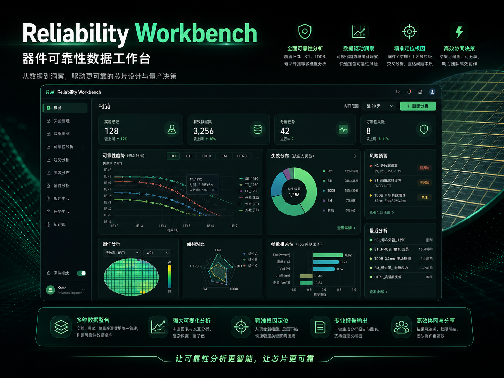
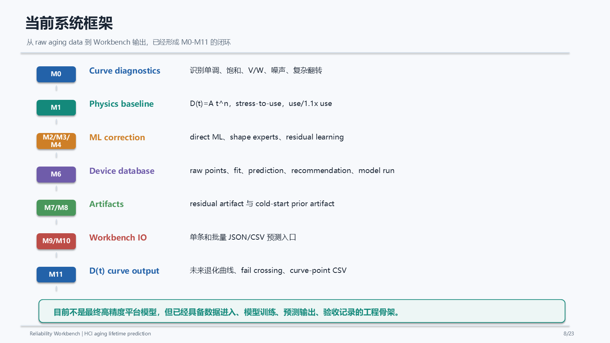
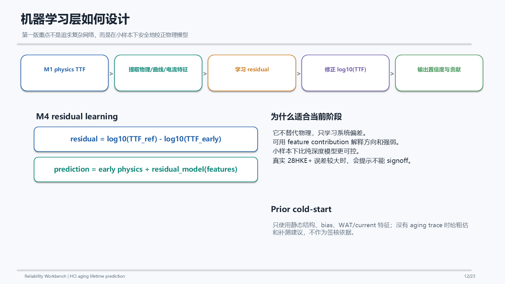

Reliability Data System
AI 赋能的器件可靠性数据工作台
把可靠性分析从分散的人工整理，组织成可浏览、可比较、可输出的前端工作台体验，当前公开内容只呈现产品层能力与界面方向。



展示说明
这个页面只保留产品介绍与公开展示层，强调可靠性数据工作台的使用场景、结果可视化和工程判断支持。非公开实现细节不在此页面展开。
备注：当前仍在开发完善中，现阶段公开页面主要用于展示能力方向和界面目标。
Reliability Data System
把可靠性分析从分散的人工整理，组织成可浏览、可比较、可输出的前端工作台体验，当前公开内容只呈现产品层能力与界面方向。



这个页面只保留产品介绍与公开展示层，强调可靠性数据工作台的使用场景、结果可视化和工程判断支持。非公开实现细节不在此页面展开。
备注：当前仍在开发完善中，现阶段公开页面主要用于展示能力方向和界面目标。